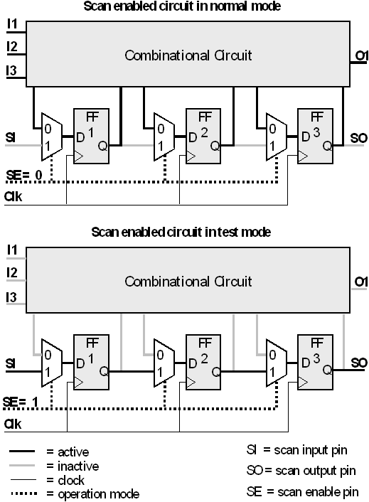

General Overview of Scan Testing
Scan testing is based on having direct access to the storage elements of a sequential circuit. To achieve this, a 2-to-1 multiplexer is placed in front of every storage element (flip-flop). The data input of this multiplexer at address 0 is a secondary output of the combinational circuit, the input at address 1 is the output of the previous flip-flop, or, for the first flip-flop, a special scan input pin. The last flip-flop has a corresponding scan output pin. The address inputs of the multiplexers are connected so that all the multiplexers always select the same address; this is controlled by a special scan enable pin. A sequence of flip-flops connected in this way is called a scan chain.
Now suppose that the scan enable pin is set to 1. Then the storage elements are disconnected from the combinational part of the circuit and form a shift register having the scan input pin as its input and the scan output pin as its output. If, on the other hand, the scan enable pin is set to 0, the circuit works as a normal sequential circuit.
A scan enabled circuit can thus be operated in two modes. In normal mode (scan enable pin set to 0), parallel test vectors are applied to the device. In test mode (scan enable pin set to 1), the scan chain is operated as a shift register. The test mode is used to compare successively the expected values of the flip-flops with the actual values resulting from the application of a previous parallel vector, and to set new values for the next parallel vector.
The following figure shows a scan enabled device in normal and in test mode:

A basic scan test comprises three steps:
- The device is put into test mode, and the state for the following application of a parallel vector is defined. If the scan chain comprises N flip-flops this requires shifting in N values. During these N cycles, the primary input and output pins of the device are idle.
- The device is put into normal mode. A parallel vector is applied to the device. The scan pins are idle.
- The device is put into test mode again, and the state of the scan chain resulting from the parallel vector is shifted out and checked in N steps. The primary input and output pins of the device are idle again.
The steps 1 and 3 are called scan sections; step 2 is called a parallel section. Normally, the sequence of steps 1 through 3 is repeated many times. In this case, step 3 of the previous repetition and step 1 of the following repetition are performed simultaneously.
During the scan sections, the primary input and output pins are idle, whereas the scan enable pin and the clock pin must always be fed with the same signal. Therefore, scan vectors will usually differ only for the scan pins; for all other pins, the same signals will be sent in every scan vector.
The example circuit in the previous figure contains only one scan chain. When the number of storage elements is large, this means that shifting in and out the values in test mode can take rather long. In this case, it may be more advantageous to define several short scan chains that are operated in parallel. When there are only a few long scan chains, one speaks of narrow scan. When there are many short scan chains, one speaks of wide scan.